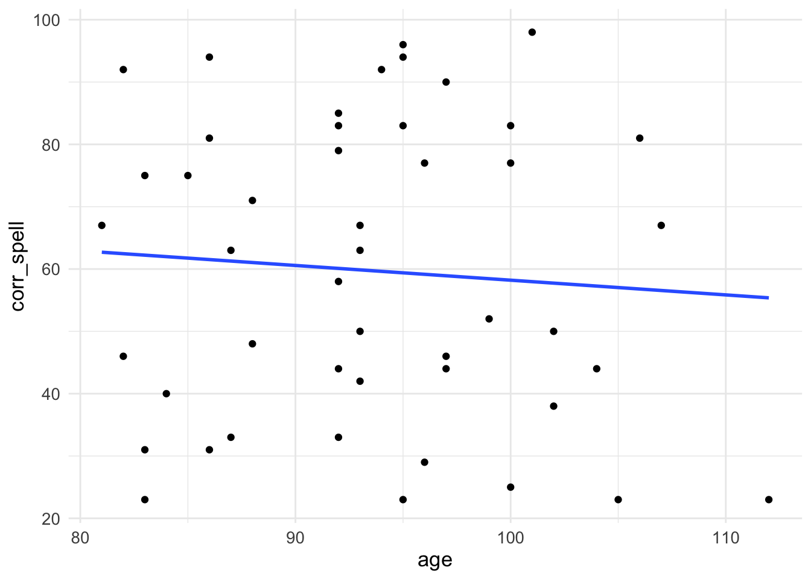
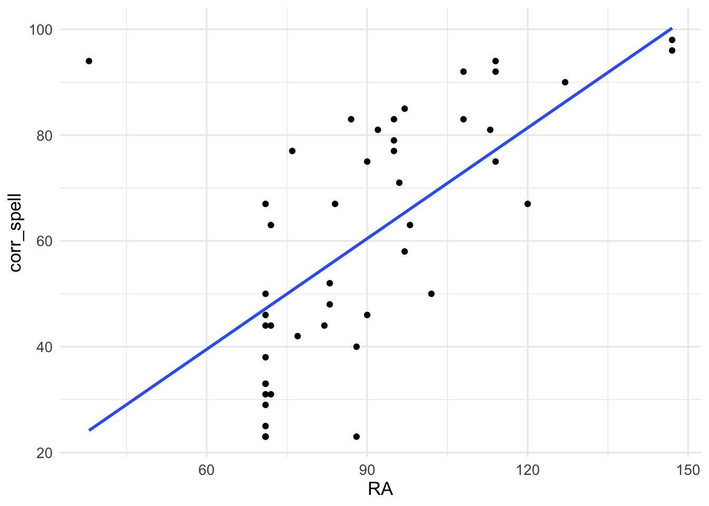
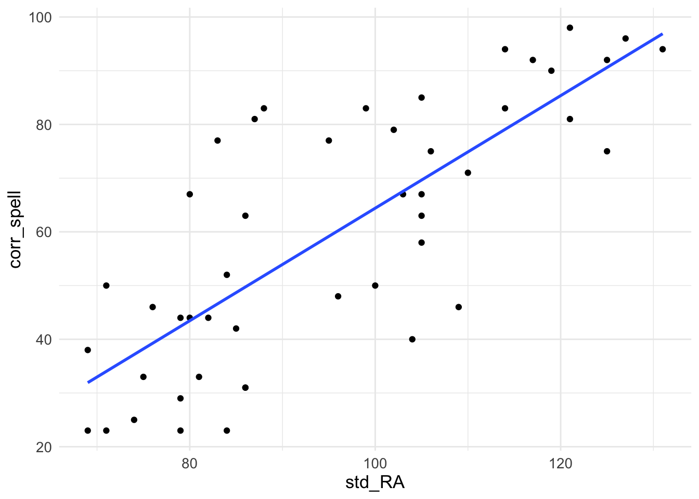
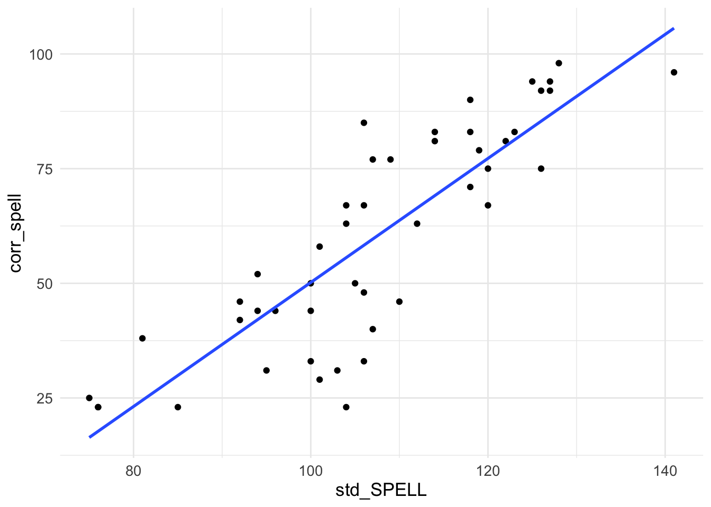
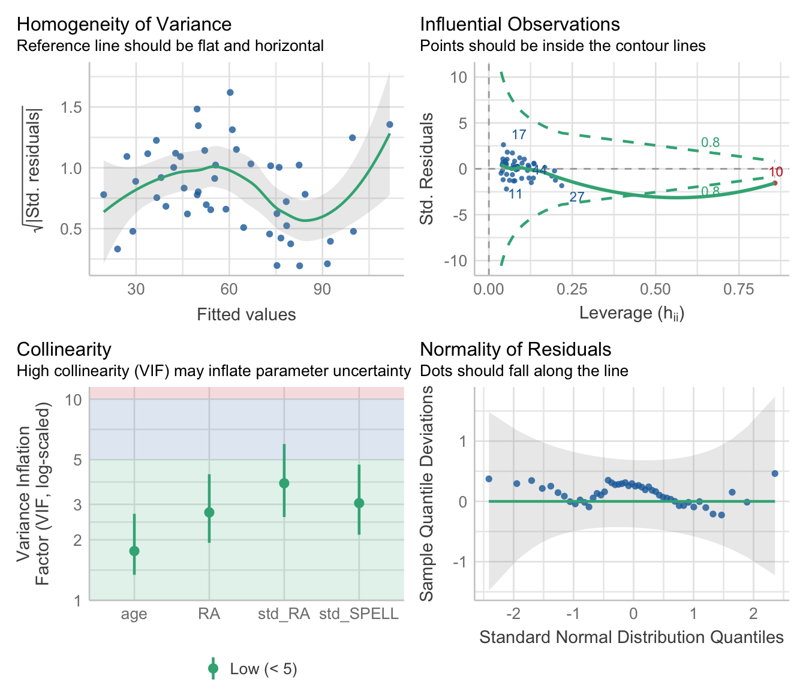
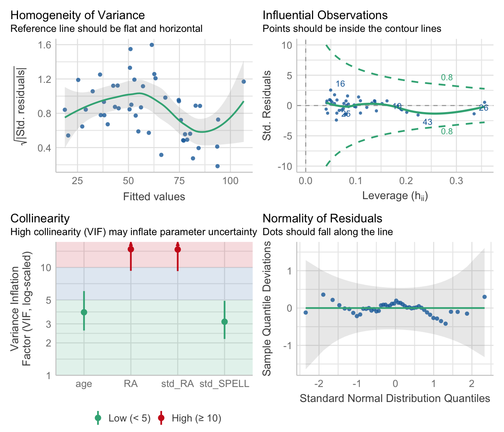

Workshop 7 Regression Part 2
In this workshop we will explore Multiple Regression in the context of the General Linear Model (GLM). Multiple Regression builds on Simple Regression, except that instead of having one predictor (as is the case with Simple Regression) we will be dealing with multiple predictors. Again, you will have the opportunity to build some regression models and use various methods to decide which one is ‘best’. You will also learn how to run model diagnostics for these models as you did in the case of Simple Regression.
7.1 Overview
First off I’d like you to watch the following video which builds on the first regression workshop. We explore how to build regression models with more than one predictor in R using the lm() function, test our model assumptions, and interpret the output. We also look at different ways of building stepwise regression models with multiple predictors.
7.2 Multiple Regression
In standard multiple regression all the independent variables (IVs) are entered into the equation and evaluated for their contribution at the same time. Let’s work through a specific example. As you read through the analysis below run the code on your machine.
An educational psychologist conducted a study that investigated the psycholinguistic variables that contribute to spelling performance in primary school children aged between 7- and 9-years. The researcher presented children with 48 words that varied systematically according to certain features such as age of acquisition, word frequency, word length, and imageability. The psychologist wants to check whether performance on the test accurately reflected children’s spelling ability as estimated by a standardised spelling test. That is, the psychologist wants to check whether her test was appropriate.
Children’s chronological age (in months) (age), their reading age (RA), their standardised reading age (std_RA), and their standardised spelling score (std_SPELL) were chosen as predictor variables. The criterion variable (Y) was the percentage correct spelling (corr_spell) score attained by each child using the list of 48 words.
First we need to load the packages we need - the require function assumes they are already on your machine. If they are not, then you need to install.packages (“packagename”) first:
7.2.1 The Packages We Need
library(tidyverse) # Load the tidyverse packages
library(Hmisc) # Needed for correlation
library(MASS) # Needed for maths functions
library(car) # Needed for VIF calculation
library(olsrr) # Needed for stepwise regression ## Warning: package 'olsrr' was built under R version 4.3.37.2.2 Import the Data
You now need to read in the data file.
MRes_tut2 <- read_csv("https://raw.githubusercontent.com/ajstewartlang/10_glm_regression_pt2/master/data/MRes_tut2.csv")Examining Possible Relationships
Before we start, let’s look at the relationships between our IVs (predictors) and our DV (outcome). We can plot graphs depicting the correlations. We’ll plot test performance against each of our four predictors in turn:
ggplot(MRes_tut2, aes(x = age, y = corr_spell)) +
geom_point() +
geom_smooth(method = "lm", se = FALSE) +
theme_minimal() +
theme(text = element_text(size = 13)) 
ggplot(MRes_tut2, aes(x = RA, y = corr_spell)) +
geom_point() +
geom_smooth(method = "lm", se = FALSE) +
theme_minimal() +
theme(text = element_text(size = 13)) 
ggplot(MRes_tut2, aes(x = std_RA, y = corr_spell)) +
geom_point() +
geom_smooth(method = "lm", se = FALSE) +
theme_minimal() +
theme(text = element_text(size = 13)) 
ggplot(MRes_tut2, aes(x = std_SPELL, y = corr_spell)) +
geom_point() +
geom_smooth(method = "lm", se = FALSE) +
theme_minimal() +
theme(text = element_text(size = 13)) 
7.2.3 Model the Data
We are going to do hierarchical regression first - we’ll build one model (which we’ll call model0) that is the mean of our outcome variable, and another model (model1) which contains all our predictors:
model0 <- lm(corr_spell ~ 1, data = MRes_tut2)
model1 <- lm(corr_spell ~ age + RA + std_RA + std_SPELL, data = MRes_tut2)Let’s compare them to each other:
## Analysis of Variance Table
##
## Model 1: corr_spell ~ 1
## Model 2: corr_spell ~ age + RA + std_RA + std_SPELL
## Res.Df RSS Df Sum of Sq F Pr(>F)
## 1 46 26348.4
## 2 42 3901.1 4 22447 60.417 < 2.2e-16 ***
## ---
## Signif. codes: 0 '***' 0.001 '**' 0.01 '*' 0.05 '.' 0.1 ' ' 1We see that the models differ from each other (look a the p-value of the comparison) and that the model with the four predictors has the lower Residuals (RSS) value meaning there is less error between the model and the observed data relative to the simpler intercept-only model (i.e., the mean) and the observed data.
Checking our Assumptions
OK, so they differ - now let’s plot information about our model assumptions - remember, we are particularly interested in Cook’s distance values for our case…

The errors looks fairly equally distributed along our fitted values (homogeneity of variance) - although a little worse for high fitted values - and from the Q-Q plot we can tell they look fairly normal (they should follow the diagonal). How about influential cases? So, Case 10 looks a bit dodgy - it has a high Cook’s Distance value (indicated by it falling outside of the dashed lines) - which suggests it is having a disproportionate effect on our model. Let’s exclude it using the filter() function - the symbol != means ‘does not equal’ so we are selecting values other than Case 10.
Re(model) the Data
We now create another model (model2) which doesn’t include Case 10.
Let’s check the model assumptions again using check_model().
Checking our Assumptions

Now, let’s look at the multicollinearity values measured by VIF:
## age RA std_RA std_SPELL
## 3.843462 14.763168 14.672084 3.140457It looks like RA and std_RA are problematic. We can look at the correlation between them using the rcorr() function:
## x y
## x 1.00 0.88
## y 0.88 1.00
##
## n= 46
##
##
## P
## x y
## x 0
## y 0Re(model) the Data
The correlation is pretty high (0.88), so let’s exclude the predictor with the highest VIF value (which is RA) and build a new model:
## age std_RA std_SPELL
## 1.190827 2.636186 2.821235Summary of our Model
Now let’s generate the coefficients as this looks like a sensible model.
##
## Call:
## lm(formula = corr_spell ~ age + std_RA + std_SPELL, data = MRes_tut2_drop10)
##
## Residuals:
## Min 1Q Median 3Q Max
## -19.801 -6.907 1.327 5.155 24.669
##
## Coefficients:
## Estimate Std. Error t value Pr(>|t|)
## (Intercept) -209.4400 26.7210 -7.838 9.43e-10 ***
## age 1.1033 0.2133 5.172 6.09e-06 ***
## std_RA 0.3804 0.1385 2.747 0.00883 **
## std_SPELL 1.2107 0.1650 7.339 4.78e-09 ***
## ---
## Signif. codes: 0 '***' 0.001 '**' 0.01 '*' 0.05 '.' 0.1 ' ' 1
##
## Residual standard error: 9.824 on 42 degrees of freedom
## Multiple R-squared: 0.8388, Adjusted R-squared: 0.8273
## F-statistic: 72.87 on 3 and 42 DF, p-value: < 2.2e-16## Analysis of Variance Table
##
## Model 1: corr_spell ~ age + std_RA + std_SPELL
## Model 2: corr_spell ~ 1
## Res.Df RSS Df Sum of Sq F Pr(>F)
## 1 42 4053.5
## 2 45 25151.0 -3 -21098 72.866 < 2.2e-16 ***
## ---
## Signif. codes: 0 '***' 0.001 '**' 0.01 '*' 0.05 '.' 0.1 ' ' 1We’d write our equation as something like:
Spelled correct = -209.44 + 1.10(age) + 0.38(std_RA) + 1.21(std_SPELL) + residual
7.3 Stepwise regression
We can also do stepwise regression - forwards is when you start with the null model and predictors are added until they don’t explain any more variance, backwards is when you start with the full model and remove predictors until removal starts affecting your model’s predictive ability. Let’s keep case 10 dropped and also drop the high VIF predictor (RA). This is handy for models with lots of predictors where the order in sequential regression is not obvious.
7.3.1 Model the Data
model0 <- lm(corr_spell ~ 1, data = MRes_tut2_drop10)
model1 <- lm(corr_spell ~ age + std_RA + std_SPELL, data = MRes_tut2_drop10)Let’s do stepwise forwards:
## Start: AIC=291.98
## corr_spell ~ 1
##
## Df Sum of Sq RSS AIC
## + std_SPELL 1 17802.2 7348.8 237.39
## + std_RA 1 14780.1 10370.9 253.23
## <none> 25151.0 291.98
## + age 1 48.7 25102.3 293.89
##
## Step: AIC=237.39
## corr_spell ~ std_SPELL
##
## Df Sum of Sq RSS AIC
## + age 1 2567.20 4781.6 219.62
## + std_RA 1 714.14 6634.7 234.69
## <none> 7348.8 237.39
##
## Step: AIC=219.62
## corr_spell ~ std_SPELL + age
##
## Df Sum of Sq RSS AIC
## + std_RA 1 728.1 4053.5 214.02
## <none> 4781.6 219.62
##
## Step: AIC=214.02
## corr_spell ~ std_SPELL + age + std_RA##
## Call:
## lm(formula = corr_spell ~ std_SPELL + age + std_RA, data = MRes_tut2_drop10)
##
## Residuals:
## Min 1Q Median 3Q Max
## -19.801 -6.907 1.327 5.155 24.669
##
## Coefficients:
## Estimate Std. Error t value Pr(>|t|)
## (Intercept) -209.4400 26.7210 -7.838 9.43e-10 ***
## std_SPELL 1.2107 0.1650 7.339 4.78e-09 ***
## age 1.1033 0.2133 5.172 6.09e-06 ***
## std_RA 0.3804 0.1385 2.747 0.00883 **
## ---
## Signif. codes: 0 '***' 0.001 '**' 0.01 '*' 0.05 '.' 0.1 ' ' 1
##
## Residual standard error: 9.824 on 42 degrees of freedom
## Multiple R-squared: 0.8388, Adjusted R-squared: 0.8273
## F-statistic: 72.87 on 3 and 42 DF, p-value: < 2.2e-16Stepwise backwards:
## Start: AIC=214.02
## corr_spell ~ age + std_RA + std_SPELL
##
## Df Sum of Sq RSS AIC
## <none> 4053.5 214.02
## - std_RA 1 728.1 4781.6 219.62
## - age 1 2581.2 6634.7 234.69
## - std_SPELL 1 5198.3 9251.8 249.98##
## Call:
## lm(formula = corr_spell ~ age + std_RA + std_SPELL, data = MRes_tut2_drop10)
##
## Residuals:
## Min 1Q Median 3Q Max
## -19.801 -6.907 1.327 5.155 24.669
##
## Coefficients:
## Estimate Std. Error t value Pr(>|t|)
## (Intercept) -209.4400 26.7210 -7.838 9.43e-10 ***
## age 1.1033 0.2133 5.172 6.09e-06 ***
## std_RA 0.3804 0.1385 2.747 0.00883 **
## std_SPELL 1.2107 0.1650 7.339 4.78e-09 ***
## ---
## Signif. codes: 0 '***' 0.001 '**' 0.01 '*' 0.05 '.' 0.1 ' ' 1
##
## Residual standard error: 9.824 on 42 degrees of freedom
## Multiple R-squared: 0.8388, Adjusted R-squared: 0.8273
## F-statistic: 72.87 on 3 and 42 DF, p-value: < 2.2e-16And stepwise using both forwards and backwards procedures:
## Start: AIC=291.98
## corr_spell ~ 1
##
## Df Sum of Sq RSS AIC
## + std_SPELL 1 17802.2 7348.8 237.39
## + std_RA 1 14780.1 10370.9 253.23
## <none> 25151.0 291.98
## + age 1 48.7 25102.3 293.89
##
## Step: AIC=237.39
## corr_spell ~ std_SPELL
##
## Df Sum of Sq RSS AIC
## + age 1 2567.2 4781.6 219.62
## + std_RA 1 714.1 6634.7 234.69
## <none> 7348.8 237.39
## - std_SPELL 1 17802.2 25151.0 291.98
##
## Step: AIC=219.62
## corr_spell ~ std_SPELL + age
##
## Df Sum of Sq RSS AIC
## + std_RA 1 728.1 4053.5 214.02
## <none> 4781.6 219.62
## - age 1 2567.2 7348.8 237.39
## - std_SPELL 1 20320.7 25102.3 293.89
##
## Step: AIC=214.02
## corr_spell ~ std_SPELL + age + std_RA
##
## Df Sum of Sq RSS AIC
## <none> 4053.5 214.02
## - std_RA 1 728.1 4781.6 219.62
## - age 1 2581.2 6634.7 234.69
## - std_SPELL 1 5198.3 9251.8 249.98Checking our Assumptions

These look ok.
##
## Call:
## lm(formula = corr_spell ~ std_SPELL + age + std_RA, data = MRes_tut2_drop10)
##
## Residuals:
## Min 1Q Median 3Q Max
## -19.801 -6.907 1.327 5.155 24.669
##
## Coefficients:
## Estimate Std. Error t value Pr(>|t|)
## (Intercept) -209.4400 26.7210 -7.838 9.43e-10 ***
## std_SPELL 1.2107 0.1650 7.339 4.78e-09 ***
## age 1.1033 0.2133 5.172 6.09e-06 ***
## std_RA 0.3804 0.1385 2.747 0.00883 **
## ---
## Signif. codes: 0 '***' 0.001 '**' 0.01 '*' 0.05 '.' 0.1 ' ' 1
##
## Residual standard error: 9.824 on 42 degrees of freedom
## Multiple R-squared: 0.8388, Adjusted R-squared: 0.8273
## F-statistic: 72.87 on 3 and 42 DF, p-value: < 2.2e-16You’ll see that the same final model is arrived it in each case. We have three significant predictors.
Entering predictors based on their p-values
We can also use the ols_step_forward_p() function from the package olsrr - this works by finding the best model by entering the predictors based on their p values. There are other methods within the olsrr package. To see them, type olsrr:: into the console window.
##
##
## Stepwise Summary
## -------------------------------------------------------------------------
## Step Variable AIC SBC SBIC R2 Adj. R2
## -------------------------------------------------------------------------
## 0 Base Model 424.527 428.184 290.981 0.00000 0.00000
## 1 std_SPELL 369.930 375.416 237.491 0.70781 0.70117
## 2 age 352.161 359.476 221.180 0.80988 0.80104
## 3 std_RA 346.562 355.706 216.764 0.83883 0.82732
## -------------------------------------------------------------------------
##
## Final Model Output
## ------------------
##
## Model Summary
## ---------------------------------------------------------------
## R 0.916 RMSE 9.387
## R-Squared 0.839 MSE 88.120
## Adj. R-Squared 0.827 Coef. Var 16.645
## Pred R-Squared 0.807 AIC 346.562
## MAE 7.512 SBC 355.706
## ---------------------------------------------------------------
## RMSE: Root Mean Square Error
## MSE: Mean Square Error
## MAE: Mean Absolute Error
## AIC: Akaike Information Criteria
## SBC: Schwarz Bayesian Criteria
##
## ANOVA
## ---------------------------------------------------------------------
## Sum of
## Squares DF Mean Square F Sig.
## ---------------------------------------------------------------------
## Regression 21097.470 3 7032.490 72.866 0.0000
## Residual 4053.508 42 96.512
## Total 25150.978 45
## ---------------------------------------------------------------------
##
## Parameter Estimates
## ----------------------------------------------------------------------------------------------
## model Beta Std. Error Std. Beta t Sig lower upper
## ----------------------------------------------------------------------------------------------
## (Intercept) -209.440 26.721 -7.838 0.000 -263.365 -155.515
## std_SPELL 1.211 0.165 0.764 7.339 0.000 0.878 1.544
## age 1.103 0.213 0.350 5.172 0.000 0.673 1.534
## std_RA 0.380 0.138 0.276 2.747 0.009 0.101 0.660
## ----------------------------------------------------------------------------------------------In this case, the model with the lowest AIC value is also the one arrived at statistically via the sequential procedure based on p-values - but this may not always be the case.